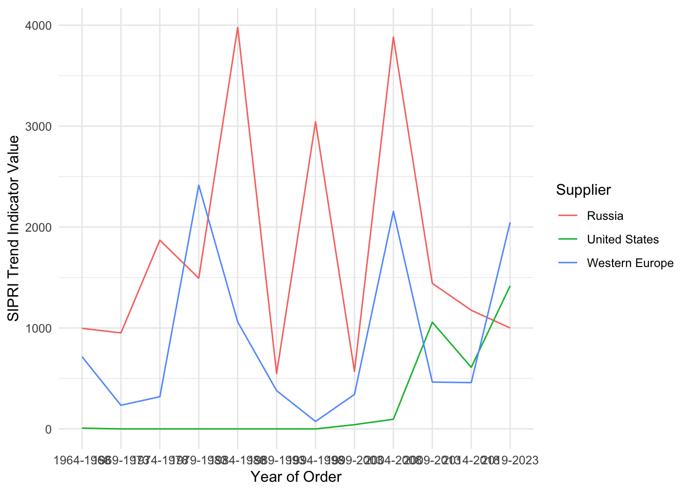
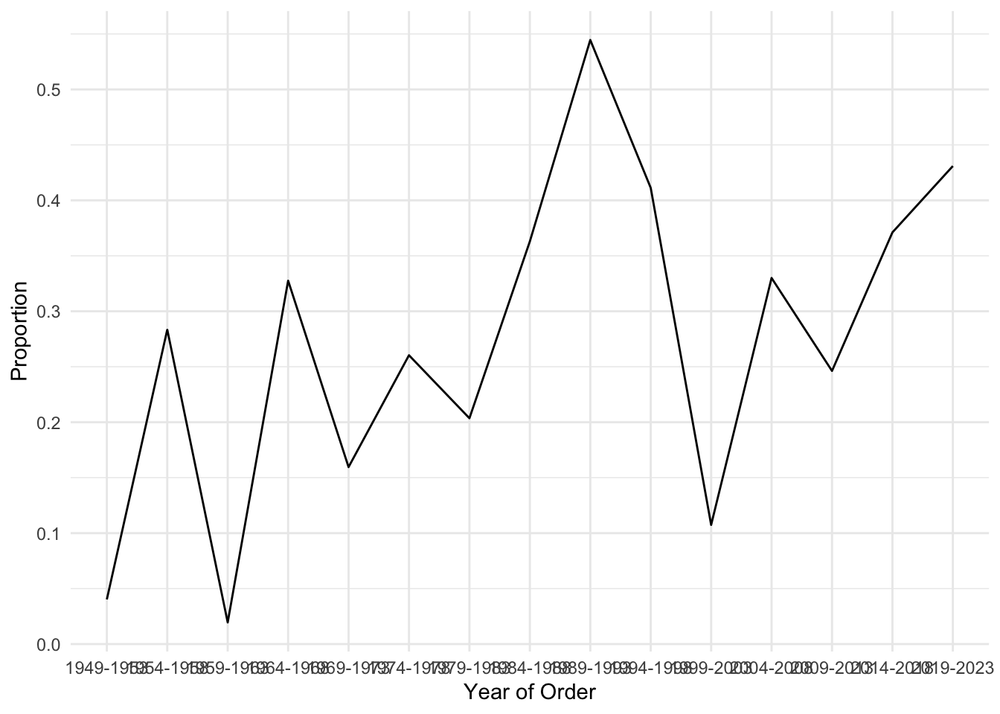
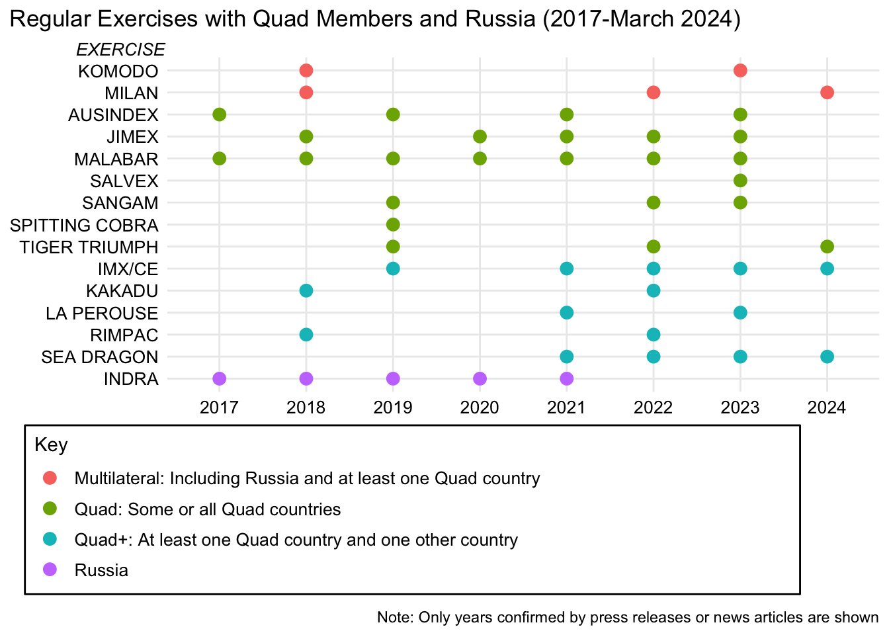

Code
library(readxl)
library(tidyverse)Josiah Gottfried
SIS 762-001
1 May 2024
A “Free and Open Indo-Pacific” is the rallying cry of the Quadrilateral Security Dialogue (Quad), which is composed of India, the United States, Australia, and Japan. As these four countries experience growing alignment, maritime security issues have taken center stage. However, the Indian Navy has a long history of partnership with Russia that has continued even after Russia’s invasion of Ukraine. There is a question of whether the Indian Navy is really shifting toward the Quad or simply pursuing the government’s proclaimed strategy of “multi-alignment.”
While multi-alignment may once have been a plausible explanation of India’s naval actions, evidence suggests that “shifting alignments” more accurately describes the Indian Navy’s international cooperation since the Ukraine War began. This paper looks at two indicators of India’s naval alignments: arms purchases and exercises. In both indicators, there are signs that India-Russia naval cooperation has been decreasing since 2022.
For naval arms transfers, India has historically depended heavily on Russia. However, India began diversifying naval arms imports away from Russia as early as 2009-2013, when Russia’s share fell below 50%. Most recently, Russia has fallen behind Western Europe and the United States as a supplier for the Indian Navy in the period 2019-2023. Moreover, there have been no major naval arms orders from Russia since 2019.
In terms of exercises, the Indian Navy’s cooperation with the Quad is booming, while exercises with the Russian Navy have noticeably dropped off since 2022. The annual Malabar exercise now includes all four Quad partners, and the Indian Navy conducts bilateral exercises with each Quad partner individually. However, the INDRA (India-Russia) Navy exercise has not occurred since 2021. Rather than a sign that the Quad partnership has always been incompatible with India-Russia naval cooperation, these trends are likely caused by India’s growing rivalry with China and the renewed alignment between Russia and China.
Considering India’s shifting naval alignments, Indian and U.S. policymakers should increase defense-industrial cooperation to replace reduced Russian capacity. India should also continue to limit naval exercises with Russia, while the United States should give India even more opportunities to enhance interoperability and skills through joint naval exercises with the United States. Each side must respect the other’s sensitivities and interests and not expect the other to always go along with its own desires. As India’s naval alignments continue to shift, the prospects for a free and open Indo-Pacific grow brighter.
The Indo-Pacific megaregion, which stretches from the eastern coast of Africa to the western shores of the Americas, is home to more than half of the world’s population, 60% of global GDP, and two-thirds of global economic growth.1 With 60% of global maritime trade passing through the Indo-Pacific,2 the region has become the world’s geoeconomic and geopolitical center of gravity.
India is a major actor in the Indo-Pacific, being the largest country in the world by population and the largest and fastest-growing economy in the Indian Ocean region (IOR). As such, its partnership is sought after by all sides, including Russia, China, the United States, and the European Union. To match its rapidly growing economy, India boasts a rapidly growing navy, with 60 ships currently at various stages of construction.3 In the Indo-Pacific region, where prosperity and security are based on the maritime realm, the Indian Navy (IN) plays a critical and increasing role in shaping the maritime balance of power. Thus, its alignments with other world navies are significant for understanding the Indo-Pacific.
Amid much speculation over whether India would shift away from its longstanding alignment with Russia due to the Ukraine War, a consensus seems to have arisen that India is seeking to balance its ties with Russia and the West.[^4] In India, this strategy has been called “multi-alignment.”4 If this is true and applies to the maritime realm, it could be a significant obstacle to deepening cooperation with India’s Quad partners due to their contentious relations with Russia.5 Hence, the aim of this paper is to answer the following research questions:
To answer these research questions, two quantifiable variables are examined. The first is IN arms imports. The arms trade is an important measure of collaboration between countries, especially since arms purchases typically entail long-term relationships for spare parts, maintenance, and training.6 The data for this variable will come from the Stockholm International Peace Research Institute (SIPRI), which has recorded arms sales from 1950-2023.7 The data will be manually filtered to focus on naval arms sales.
The second variable is the number of joint naval exercises with other countries. Naval exercises increase navies’ interoperability, which helps them to prepare for contingencies where cooperation is required. Additionally, when they are publicized, they can signal alignment to the international community.8 The data for this variable will be gathered through online searches for the period 2018-2023. Sources will include press releases, Facebook posts by official accounts, and news articles. By necessity, this data will be limited to publicly announced exercises, but this is not a major problem because it will allow conclusions to be drawn from the public signaling nature of exercises.
The remainder of this paper is structured as follows. The next section examines India’s maritime interests and strategy and explores how India’s objectives in the Indo-Pacific compare with those of Russia and the other Quad states. After that is an analysis of IN arms purchases and joint exercises. Finally, the paper discusses the analysis results and makes several recommendations for Indian and U.S. policymakers.
India’s maritime interests, outlined in its 2015 document Ensuring Secure Seas: Indian Maritime Security Strategy,9 can be broadly grouped into three categories: traditional security, nontraditional security, and regional stability.
Traditional security refers to maintenance of sovereignty and territorial integrity against state-based threats. Like many postcolonial states, India guards its sovereignty jealously. The Indian Navy upholds this interest by developing capabilities to deter rivals and defeat them should conflict arise.
India faces an array of nontraditional security threats, including terrorism, piracy, and natural disasters. The 2008 Mumbai terrorist attacks highlighted the ability of terrorist groups to strike by sea. Piracy is a problem for India’s growing maritime trade and threatens India’s sea lines of communication (SLOCs). Moreover, the Indian Ocean region (IOR) is the most disaster-prone region in the world.
India’s national interests depend on stability within its maritime zones and neighborhood. Thus, India has an interest in good maritime relations with other states in the IOR.
India’s grand strategic vision, including its maritime strategic vision, may be summarized as a “multipolar Indo-Pacific.” Each of those words carries significant meaning, beginning with the term “Indo-Pacific.”
The modern idea of the Indo-Pacific as a single strategic theater can be traced to Japanese prime minister Abe Shinzo’s 2007 speech to the Indian parliament, wherein he declared that a “confluence” of the Indian and Pacific oceans was coming into being.10 The Indo-Pacific idea gradually caught on in policy circles, and India officially recognized it in its 2015 maritime security strategy. However, India remained reluctant to lean too heavily on the concept because it did not want to appear to be a part of a Western alliance against China. That changed in 2018, when Indian prime minister Narendra Modi made a speech at the Shangri-La Dialogue embracing the Indo-Pacific concept.11
India traditionally limited itself to the IOR, but China’s growing presence in the region has forced India to think more broadly. While historically India’s much smaller neighbors have had no choice but turn to India for security, they are increasingly engaging with China.12 This has generated fears in India that China is gaining influence in India’s neighbors to craft a “string of pearls” surrounding India.13 By accepting the term “Indo-Pacific,” India recognizes that China is now a part of its larger neighborhood while signaling that other countries in the oceanic region who are also affected by China’s rise should develop a common response.
India’s foreign policy assumes that U.S. global hegemony is declining or already is a thing of the past. But China will not replace the United States, nor will China and the United States be the only two great powers. To Indian foreign policymakers, the return to multipolarity is a good thing, as it gives them more freedom to pursue their national interests.14
For India, multipolarity is not only about the global distribution of power, but also about the distribution of power in the Indo-Pacific. India is not willing to let China dominate the Indo-Pacific region. In India’s view, other rising Indo-Pacific powers, including itself, should wield influence across the Indo-Pacific that is independent of Chinese power.15
During the Cold War, India pursued a policy of non-alignment. After the Cold War, this policy became obsolete, but India’s strong tradition of strategic autonomy remained.16 Thus, India never aligned with the United States during the years of unipolarity, continuing to pursue its own interests regardless of U.S. policies. This was clearly demonstrated when India tested nuclear weapons in 1998 in defiance of U.S. non-proliferation policy. Though the United States imposed sanctions, India refused to give up its nuclear program. Relations only repaired once the United States lifted sanctions and effectively accepted India’s nuclear status.17
As the world turned multipolar over the past decade, India’s non-aligned, autonomist impulse found a new form in the strategy of multi-alignment.18 In 2017, it both helped to revive the Quad and joined the China- and Russia-led Shanghai Cooperation Organization. India sees no contradiction in this strategy, as each grouping helps to advance its national interests. After Russia’s invasion of Ukraine, India refused to condemn the invasion despite Western pressure. Instead, India upped its imports of Russian oil while continuing to deepen its engagement with Western countries.19
India has paired its increasing international engagement with a policy of increased self-reliance, especially in its defense procurement. For the navy, a top goal is to shift from a “buyer’s navy” to a “builder’s navy.”20 Indian policy documents also mention “leapfrogging technologies” to stay ahead of the technological curve.21 Self-reliance enables India to reduce its need to align with one side.
However, India’s multi-alignment strategy faces increasing obstacles. Relations with China, which were positive when Modi visited China in 2018,22 have taken a decided turn for the worse since the COVID-19 pandemic and the India-China border standoff of 2020. Any strategic trust between India and China no longer exists.23 Moreover, India’s strategy is challenged by the growing rift between Russia and the West as the Ukraine War continues. India’s deft handling of relationships with both sides early in the war is becoming more difficult because the war has taken a toll on Russia’s global reach and because India’s support of Russia remains a sore point for India’s other partners.
India and Russia share the belief that the world is becoming multipolar, and both countries believe that a multi-polar world order is beneficial to them. Besides China, Russia is the most powerful country not aligned with the United States, and therefore India views Russia’s continued great power status as crucial to multipolarity. Russia, in turn, recognizes the growing global importance of Asia and India’s critical role in Asia. If Russia is to remain a great power, it must cultivate its relations with both China and India.
Russia and India also have inertia behind their relationship. Russia has historically sided with India in international affairs. During India’s 1971 war with Pakistan, the United States backed Pakistan, fueling decades of Indian suspicion, while the then-Soviet Union sided with India. The Soviet Union and India developed a close defense relationship, and the Soviet Union was India’s major supplier of arms throughout the Cold War, including in the maritime domain. Arms sales collapsed with the Soviet Union, but then quickly resumed under Russia. These arms transfers are significant because they are a long-term commitment. Russian armaments often require Russian maintenance, Russian training, and Russian parts. Russian president Vladimir Putin has especially valued India’s partnership, raising India to the status of “specially privileged strategic partnership” in 2010.
However, Russia and India have increasingly diverged since 2014, primarily because of differing views of China. Russia views China as a crucial partner in opposing U.S. hegemony, while India fears Chinese hegemony in the Indo-Pacific. Russia refuses to accept the term “Indo-Pacific” because it believes that the term is code for a U.S.-led effort to contain China. Since the declaration of Russia and China’s “no limits” partnership and the beginning of the Ukraine War in 2022, Russia has become even more aligned with China.
Another point of divergence is relations with Western countries. While Russia believe the West constitutes its primary threat, India is deepening relations with Western countries, which it views as key to balancing against China. On maritime issues, Russia has joined China in exercises near Japan and South Korea, but the IN has preferred to exercise with Japan and South Korea.
The Quad states share an interest in enhancing their strategic autonomy as China rises. For the United States in particular, a key element of its strategy is preventing the ascendance of any one Asian hegemon. Besides India, none of the Quad states are part of mainland Asia, but they recognize that an Asian hegemon would have enormous strategic leverage as it would control the most economically important region of the world.
For the Quad states, open SLOCs are critical for their prosperity and even survival. Japan and Australia are especially dependent on trade through the Indo-Pacific, much of which passes through chokepoints such as the Strait of Hormuz and Strait of Malacca. Neither of these countries have large oil reserves, so they must import oil from across the sea. India’s geographic position close to SLOCs and many of the region’s chokepoints make it an essential partner for the Quad.
India is also necessary for the Quad’s implicit vision of balancing China in the Indo-Pacific. Since China’s economy surpassed Japan’s in 2010, no single Asian country will match China’s economy for the foreseeable future. India, the only country that has a larger population than China, is the Quad’s best chance of a counterweight to China. Therefore, including India in the Indo-Pacific region’s institutions and strategic imagination is important for all four countries to avert a Chinese-dominated region.
The greatest divergence between India and the other Quad states is currently its close relations with Russia. The other Quad states have strongly condemned Russia’s invasion of Ukraine and aided Ukraine. For Australia, Russia’s invasion challenges international norms against conquest and sets a precedent for similar Chinese actions. For the United States, Russian victory in the war would threaten its NATO allies and potentially lead to more direct confrontations in the future. On top of that, Japan believes that Russian behavior in Ukraine is linked with its militarization of the disputed Northern Territories. Hence, the three states have an interest in seeing Russia fail, while India is tacitly helping Russia to succeed.
So far, the partners have been willing to overlook India’s ties with Russia for the greater benefit of continued cooperation against China. In 2022, the United States waived sanctions on India for purchasing the S-400 missile system—whereas the United States refused to waive sanction on its NATO ally Turkey for purchasing the same system. The U.S. concern is that the S-400 system’s intelligence gathering capabilities will compromise advanced U.S. equipment in the hands of its allies and partners. So far, India does not possess any major advanced U.S. equipment, but its continued ties with Russia could hinder deepening cooperation in the future.
library(readxl)
library(tidyverse)# load arms import data
arms <- read_csv("Data/ArmsImports.csv", locale = locale(encoding = "Latin1"), skip = 11)
arms <- filter(arms, !is.na(Category))
naval_arms <- subset(arms, Category %in% c("A", "B"))naval_arms %>%
filter(`Year of order` > 1963) %>%
mutate(Period = floor((`Year of order` + 1) / 5),
Supplier = case_when(str_detect(Supplier, "Denmark|France|Germany|Italy|Netherlands|Spain|Sweden|United Kingdom") ~ "Western Europe",
Supplier == "Soviet Union" ~ "Russia",
TRUE ~ Supplier)) %>%
group_by(Period, Supplier) %>%
summarize(TIV = sum(`SIPRI TIV for total order`)) %>%
filter(Supplier %in% c("Russia", "United States", "Western Europe")) %>%
pivot_wider(names_from = Supplier, values_from = TIV, values_fill = 0) %>%
pivot_longer(-Period, names_to = "Supplier", values_to = "TIV") %>%
mutate(Period = factor(str_c(Period * 5 - 1, Period * 5 + 3, sep = "-"))) %>%
ggplot(aes(x = Period, y = TIV, color = Supplier, group = Supplier)) +
geom_line() +
xlab("Year of Order") +
ylab("SIPRI Trend Indicator Value") +
theme_minimal()
Figure 1. Russia’s share of Indian Navy imports has been overtaken by the Western Europe and the United States in the latest period.
India has publicly announced that it is diversifying its arms purchases away from Russia. The bulk of other suppliers are Western countries, particularly the United States and France. Headline-grabbing developments include the 2016 $8.8 billion with France to acquire 36 Rafale fighter jets and the United States’ elevation of India to a “major defense partnership.” The data show that these developments are carrying over into IN acquisitions.
Mirroring the rapid decline in naval acquisitions from Russia, naval acquisitions from Western countries have risen more quickly than overall defense acquisitions. India’s two largest naval exporters between 2019 and 2023 were France and the United States. Other major exporters recently include Spain, Germany, and Italy. Together, Western European countries accounted for 45% of Indian naval imports in the last five years.
For India, Western weapons have at least two advantages over Russian weapons. First, they tend to be more reliable and higher quality. The Ukraine War demonstrated the obsolescence of many Russian platforms. Second, they enable closer alignment with the Quad, since they are interoperable with the other Quad countries’ platforms.
However, Western naval armaments also come with disadvantages. They tend to be expensive. Additionally, they can increase India’s dependence on the Western bloc, which can reduce its ability to maneuver in international politics. Western firms are also less likely to want to co-produce equipment with Indian firms due to intellectual property concerns. Thus, India has particularly emphasized the “Make in India” initiative.
Indian Navy chief Hari Kumar has expressed his ambition to set the IN on a course to become atmanirbhar, or self-reliant, by 2047. The IN already has the capacity to produce 33 submarines and 63 warships on its own, and it aims to produce all submarines, aircraft, and weapons indigenously. Among the Indian defense industry’s accomplishments are the 2016 completion of the INS Arihant nuclear-powered ballistic missile submarine, the first ballistic missile submarine built by a country that is not a permanent member of the United Nations Security Council, and the INS Vikrant aircraft carrier, commissioned in 2022.
The Indian government requires that new acquisitions must be produced domestically whenever possible. Only if Indian industry is not able to produce an armament can it be purchased from overseas. Even in this case, the Indian Armed Forces are encouraged to seek opportunities to co-produce with the foreign supplier.
arms %>%
filter(`Year of order` > 1948) %>%
mutate(Period = floor((`Year of order` + 1) / 5)) %>%
group_by(Period, Category) %>%
summarize(TIV = sum(`SIPRI TIV for total order`)) %>%
pivot_wider(id_cols = Period, names_from = Category, values_from = TIV, values_fill = 0) %>%
mutate(Naval = A + B,
Total = A + B + C + D + E,
Proportion = Naval / Total) %>%
mutate(Period = factor(str_c(Period * 5 - 1, Period * 5 + 3, sep = "-"))) %>%
ggplot(aes(x = Period, y = Proportion, group = 1)) +
geom_line() +
xlab("Year of Order") +
theme_minimal()
Figure 2. Despite its goal of becoming atmanirbhar (self-reliant), the Indian Navy’s arms imports increased in the period 2019-2023.
However, the data shows that the IN’s arms imports increased by 38% from 2014-2018 to 2019-2023, continuing a generally upward trend since at least the 1960s. This is possibly due to the increasing defense budget, as India seeks to rapidly build-up to match China’s military modernization. Even though Indian domestic production is ramping up, it is unclear how long it will take for domestic production to match growing naval acquisitions. Hence, there is an opening for Western firms to continue building arms for the IN for at least a couple of decades.
# load exercises data
exercises <- read_xlsx("Data/Exercises.xlsx", sheet = "Sheet2")
exercises <- exercises[1:81, 1:13]exercises %>%
filter(Type == "Regular") %>%
mutate(Name = case_when(Name == "CUTLASS EXPRESS" ~ "IMX/CE",
str_detect(Name, "INDRA") ~ "INDRA",
TRUE ~ Name),
Alignment = case_when(str_detect(Name, "INDRA|VOSTOK") ~ "Russia",
str_detect(Name, "KOMODO|MILAN") ~ "Multilateral",
str_detect(Name, "IMX/CE|LA PEROUSE|KAKADU|RIMPAC|SEA DRAGON") ~ "Quad+",
TRUE ~ "Quad")) %>%
count(Year, Name, Alignment) %>%
mutate(across(everything(), factor)) %>%
ggplot(aes(x = Year, y = fct_reorder(fct_rev(Name), as.integer(Alignment), .desc = TRUE), color = Alignment)) +
geom_point(size = 3) +
ggtitle("Regular Exercises with Quad Members and Russia (2017-March 2024)") +
labs(subtitle = "EXERCISE",
caption = "\n\n\n\n\n\n\n\n\n\n\nNote: Only years confirmed by press releases or news articles are shown") +
scale_color_discrete(name = "Key",
labels = c(
"Multilateral: Including Russia and at least one Quad country ",
"Quad: Some or all Quad countries",
"Quad+: At least one Quad country and one other country",
"Russia"
)) +
guides(color = guide_legend(ncol = 1)) +
theme_minimal() %+replace%
theme(plot.title.position = "plot",
plot.caption.position = "plot",
plot.subtitle = element_text(size = 10, hjust = 0.085, face = "italic"),
axis.title = element_blank(),
axis.text = element_text(size = 10),
legend.text = element_text(size = 10),
legend.position = c(-0.2, -0.1),
legend.justification = c(0, 1),
legend.background = element_rect(color = "black", fill = "white"))
Figure 3. The Indian Navy’s regular exercises with Quad partners have increased since 2018, while its annual exercise INDRA with Russia has not occurred since 2021.
India and Russia have held exercise INDRA since 2003. The drill was originally biennial, but after 2014 the drill was held annually. This signaled the IN’s increasing alignment with Russia in pursuit of its multi-alignment strategy. Remarkably, the INDRA Navy exercise was held even in 2020 amid the coronavirus pandemic, albeit without contact between the crews. The IN only participated in two other regular exercises in 2020: one with Japan and the Malabar exercise with the Quad countries. However, exercise INDRA’s annual tempo came to an abrupt halt in 2022. That year, the exercises were deferred by a year to 2023. Then, in 2023, the exercise was apparently converted to a lower-profile passage exercise (PASSEX).
Besides INDRA, India and Russia have exercised together in PASSEXs and in large multilateral drills. On top of the PASSEX in 2023, the IN completed PASSEXs with Russia in December 2020 and January 2022. The IN and Russian Navy have also exercised together in the Southeast Asian-led ADMM-Plus exercise of 2019 and the Indonesian-led Komodo exercise of 2023. Both exercises included the Quad countries as well. The IN also invited Russia to its exercise Milan, an Indian-hosted exercise featuring 58 countries including the Quad countries.
An exercise that demonstrated the limits of Russia-India naval exercises was Russian-hosted tri-services exercise Vostok in 2022. This major exercise, held after the Ukraine War began, was denounced by Western countries. Japan especially protested the naval component of the exercises, which was held in the Sea of Japan. India sent its army and air force to the exercise, but the IN declined to send any ships to avoid provoking Japan.
The evidence from India-Russia joint naval exercises suggests that naval cooperation between India and Russia is slowing since the Ukraine War began in February 2022. This may not be because of any Indian discomfort with Russian actions in the Ukraine War, but rather due to practical reasons. One may be that the Russian Navy has decreased bandwidth to exercise with partners because of the war, but this is likely not the main reason. The Russian Pacific Fleet (which is also responsible for the Indian Ocean) is blocked from participating in the war by Turkey’s closure of the Bosporus Straits. Since the fleet is not participating in the war, it should be available to continue exercising with Indo-Pacific countries, and it has conducted high profile exercises with the Chinese People’s Liberation Army – Navy (PLA-N).
The lack of high-profile, complex exercises between the IN and the Pacific Fleet (besides regional multilateral exercises that also involve the other Quad countries) therefore seems to be caused by India’s awareness of its partners’ sensitivities. This was almost explicit in the IN’s non-participation in the Vostok exercises, but it probably also applies to the INDRA exercises and the decline in other naval engagements. It is worth noting, however, that the IN still exercises with the Russian Navy on a reduced scale, so the IN has not abandoned Russia entirely.
The IN’s cooperation with the Quad is another story. Today’s flagship Quad naval exercise Malabar began as an annual bilateral exercise between India and the United States in 1992. Besides the 2007 edition, which included the participation of Australia, Japan, and Singapore, the exercise remained strictly bilateral, mainly because of China’s concerns. However, in 2014, Japan was again invited to join the exercise, and in 2015 it became a permanent member. At India’s insistence, the exercise did not add Australia as a regular member until 2020. But that year, rising tensions due to the border standoff with China caused India to lift its objection. Since then, exercise Malabar has continued annually, becoming one of the IN’s most complex international joint exercises.
Another key component of the IN’s cooperation with the Quad is its bilateral exercises with each of the individual partners. The IN and Japan Maritime Self-Defense Force (JMSDF) hold regular exercises under the name JIMEX. JIMEX was first held in 2012, but did not become consistent until 2020, when it was established as an annual event. The IN exercises with the Royal Australian Navy (RAN) on a biennial basis in AUSINDEX, which has been held consistently since 2015. Despite the multilateralization of Malabar, the IN’s bilateral exercise schedule with the United States remains full, with exercises including Sangam (special operations forces), Tiger TRIUMPH (humanitarian and disaster relief), and SALVEX (salvage and explosive ordinance disposal). Additionally, the IN has conducted at least 20 one-off bilateral exercises with Quad countries since 2018, including PASSEXs and maritime partnership exercises.
Finally, IN exercises with the Quad include multilateral drills that extend beyond the Quad. Notable exercises include exercise Sea Dragon, a U.S.-led anti-submarine warfare drill that usually includes the Quad countries, Canada, and South Korea. India was first added to this exercise in 2021. France, which already has outstanding bilateral cooperation with the IN, added the IN to multilateral exercise La Perouse in 2021, making it a Quad-plus-France exercise. There are also the massive multilateral drills hosted by Quad countries, including U.S.-led exercise RIMPAC and Australian-led exercise Kakadu, which each saw Indian participation in 2018 and 2022. India also began participating in the U.S.-led exercise Cutlass Express with East African countries in 2019.
The IN’s exercises with Quad countries in the last five years show a rapid increase since 2020. This lines up with the broader strategic shift in the Indian government toward balancing China after the 2020 border clashes. Although these clashes occurred on land, the Indian government believes that the maritime realm is highly relevant to its competition with China, and so it is strengthening its naval ties with the Quad countries.
From a naval perspective, India’s proclaimed strategy of multi-alignment seems to have been strongest before the Ukraine War, when cooperation with Russia was strong and cooperation with the Quad was increasing. At the time, there was not necessarily a negative correlation between cooperation with Russia and cooperation with the Quad—the Indian Navy was able to reap benefits from its strong relationship with both sides.
Since the war began, however, the clear trend is reduced naval cooperation with Russia and increased cooperation with the Quad. This is likely caused by the growing rift between China and Russia on the one hand and the United States and its allies on the other, which makes India’s balancing act increasingly untenable. Moreover, India is wary of the “no limits partnership” between Russia and China. For the benefit of Indian and Indo-Pacific maritime security, it is vital that policymakers in New Delhi and Washington recognize India’s shifting naval alignments and lean into them.
For India, Russia’s growing dependence on China is worrying, and so is Russia’s open antagonism toward India’s partners in the West. Although India is naturally shifting away from Russia due to increasingly misaligned interests, it will seek to maintain its relationship with Russia where possible. India wants to give Russia options so that it does not entirely become a Chinese client. This includes continuation of occasional arms purchases and naval exercises.
However, India has also shown that its strategic interests currently align more with the United States and its Quad partners. Thus, India will increasingly pursue defense-industrial cooperation, even as it aims to indigenize its naval force. Indian exercises with Quad countries will also grow in complexity and perhaps frequency. India has shown that it is aware of its partners’ sensitivities regarding Russia, and it will take them into account as it balances its own interests.
On the United States’ part, cooperation with India has been enthusiastically pursued since the George W. Bush administration. Growing naval alignment should be heartening to U.S. policymakers. Yet the United States should balance its enthusiasm for India’s shifting alignments with patience, since the Indian Navy’s relationship with Russia will endure for the foreseeable future. Given the overall alignment of interests and the need for mutual accommodation, policymakers on both sides would do well to consider the following recommendations.
For India, policymakers should consider:
For the United States, policymakers should consider:
Maritime geopolitics are never simple and always shifting. India’s once firm commitment to multi-alignment appears to be slipping, at least in the maritime realm. This is a recognition of new realities. A Russia-China naval alignment in the Indo-Pacific would be formidable, but it is already increasingly happening regardless of India’s support for Russia. Naturally, India is hedging its bets through increasing cooperation with its Quad partners, especially in the naval arena. This is not contradictory to India’s vision of a multipolar Indo-Pacific; it is normal in a multipolar system for alignments to shift. To achieve the Quad’s goal of a free, open, and inclusive Indo-Pacific, it is imperative that policymakers from New Delhi to Washington recognize India’s shifting naval alignments and move forward based on that fact.
U.S. Department of State. “The United States’ Enduring Commitment to the Indo-Pacific: Marking Two Years Since the Release of the Administration’s Indo-Pacific Strategy,” U.S. Department of State, 9 February 2009. https://www.state.gov/the-united-states-enduring-commitment-to-the-indo-pacific-marking-two-years-since-the-release-of-the-administrations-indo-pacific-strategy/↩︎
China Power Team. “How Much Trade Transits the South China Sea?” ChinaPower, CSIS, 25 January 2021. https://chinapower.csis.org/much-trade-transits-south-china-sea/ Bloomberg. “India’s Naval Ambitions: 160 Warships And Second Carrier By 2030,” gCaptain, 28 November 2023. https://gcaptain.com/indias-naval-ambitions-160-warships-and-second-carrier-by-2030/↩︎
Jagannath Panda. “How Is India’s Silent Diplomacy Navigating the Russia-Ukraine War?” The Diplomat, 8 March 2022. https://thediplomat.com/2022/03/how-is-indias-silent-diplomacy-navigating-the-russia-ukraine-war/↩︎
Joanne Lin. “India and Multi-Alignment: Having One’s Cake and Eating It Too,” AsiaLink, University of Melbourne, 21 February 2023. https://asialink.unimelb.edu.au/insights/india-and-multi-alignment-having-ones-cake-and-eating-it-too↩︎
Erin Mello. “The Enduring Russian Impediment to U.S.-Indian Relations,” War on the Rocks, Metamorphic Media, 13 February 2023. https://warontherocks.com/2023/02/the-enduring-russian-impediment-to-u-s-indian-relations/↩︎
Sameer Lalwani, Frank O’Donnell, Tyler Sagerstrom, and Akriti Vasudeva. “The Influence of Arms: Explaining the Durability of India–Russia Alignment,” Journal of Indo-Pacific Affairs, Air University, 15 January 2021. https://www.airuniversity.af.edu/JIPA/Display/Article/2473328/the-influence-of-arms-explaining-the-durability-of-indiarussia-alignment/↩︎
Stockholm International Peace Research Institute. Arms Transfer Database, 11 March 2024. https://armstransfers.sipri.org/ArmsTransfer/↩︎
Kishore Kumar Khera. “International Military Exercises: An Indian Perspective,” Journal of Defence Studies, vol. 11, no. 3, July-September 2017, pp. 17-40. https://idsa.in/system/files/jds/jds_11_3_2017_international-military-exercises.pdf↩︎
Ministry of Defence (Navy). Ensuring Secure Seas: Indian Maritime Security Strategy, Naval Strategic Publication (NSP 1.2), October 2015. https://bharatshakti.in/wp-content/uploads/2016/01/Indian_Maritime_Security_Strategy_Document_25Jan16.pdf↩︎
Abe Shinzo. “Confluence of the Two Seas,” Speech by H.E. Mr. Shinzo Abe, Prime Minister of Japan, at the Parliament of the Republic of India, 22 August 2007. https://www.mofa.go.jp/region/asia-paci/pmv0708/speech-2.html↩︎
Darshana M. Baruah. “India in the Indo-Pacific: India’s Theater of Opportunity,” Carnegie Endowment for International Peace, 30 June 2020. https://carnegieendowment.org/2020/06/30/india-in-indo-pacific-new-delhi-s-theater-of-opportunity-pub-82205↩︎
Darshana M. Baruah. “India in the Indo-Pacific: India’s Theater of Opportunity,” Carnegie Endowment for International Peace, 30 June 2020. https://carnegieendowment.org/2020/06/30/india-in-indo-pacific-new-delhi-s-theater-of-opportunity-pub-82205↩︎
Prabhash K. Dutta. “Can China really encircle India with its String of Pearls? The great game of Asia,” India Today, Living Media India, 15 June 2017. https://www.indiatoday.in/india/story/china-encircle-india-string-of-pearls-982930-2017-06-15↩︎
Ashley J. Tellis. “Non-Allied Forever: India’s Grand Strategy According to Subrahmanyam Jaishankar,” Carnegie Endowment for International Peace, 3 March 2021. https://carnegieendowment.org/2021/03/03/non-allied-forever-india-s-grand-strategy-according-to-subrahmanyam-jaishankar-pub-83974↩︎
Jagannath Panda. “India’s ‘Multipolar Asia’ and China,” East Asia Forum, 27 August 2019. https://eastasiaforum.org/2019/08/27/indias-multipolar-asia-and-china/↩︎
Jeff M. Smith. “Strategic Autonomy and U.S.-Indian Relations,” War on the Rocks, Metamorphic Media, 6 November 2020. https://warontherocks.com/2020/11/strategic-autonomy-and-u-s-indian-relations/↩︎
Vivek Mishra. “The transcending arc of India-US relations since Pokhran II,” Observer Research Foundation, 9 May 2023. https://www.orfonline.org/expert-speak/the-transcending-arc-of-india-us-relations-since-pokhran-ii↩︎
Ian Hall. “Multialignment and Indian Foreign Policy under Narendra Modi.” The Round Table 105, no. 3 (2016): 271–86. https://doi.org/10.1080/00358533.2016.1180760.↩︎
Shreya Upadhyay. “BRICS, Quad, and India’s Multi-Alignment Strategy,” South Asian Voices, Stimson Center, 12 July 2022. https://southasianvoices.org/brics-quad-and-indias-multi-alignment-strategy/↩︎
Rajat Pandit. “Govt Moves to Turn From Buyer’s Navy into a Builder’s Navy,” Times of India, Bennett, Coleman, & Co., 17 July 2015. https://timesofindia.indiatimes.com/india/govt-moves-to-turn-buyers-navy-into-a-builders-navy/articleshow/48106944.cms↩︎
Ministry of Defence (Navy). Ensuring Secure Seas: Indian Maritime Security Strategy, Naval Strategic Publication (NSP 1.2), October 2015. https://bharatshakti.in/wp-content/uploads/2016/01/Indian_Maritime_Security_Strategy_Document_25Jan16.pdf↩︎
East Asia Forum editors. “Modi and Xi Reset China-India Relations,” East Asia Forum, 14 May 2018. https://eastasiaforum.org/2018/05/14/modi-and-xi-reset-china-india-relations/↩︎
Daniel Markey and Andrew Scobell. “Three Things to Know About China-India Tensions,” United States Institute of Peace, 19 October 2023. https://www.usip.org/publications/2023/10/three-things-know-about-china-india-tensions↩︎